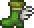
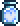
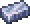
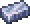
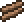

The gear you have obtained and the arena you have created will be very useful, now get out there and win!
Part Two: Eye of Cthulhu Melee | ||||
|---|---|---|---|---|
| Demonic Purge | The Evil of the World | Boss Fight #1 | ||
Unless you have already encountered a Suspicious Looking Eye in a chest, you will need to wait until night to start taking out Demon Eyes for their lenses (6 to be exact). |
You Will have to bring these lenses to a Demon Alter in your Evil Biome. Evil Biomes are colored either Red (for the crimson biome) or Purple (for the corruption). THe alters are found underground, but traverse carefully. Not every plummet downwards will bring you to the right location. |
After creating the Suspicious Looking Eye, you will need to wait until night to defeat your first boss. The Eye of Cthulhu. |
||
Notable Items |
|||||
|---|---|---|---|---|---|
  Platinum/Gold Pickaxe |
Platinum/Gold Armor |
 |
 |  | |
Crafting |
|||||
10x Gold/Platinum Bar   4x Wood  |
75x Gold/Platinum Bar |
Found in Undergound Gold Chests |
Found in Undergound Gold Chests |
Found in Undergound Gold Chests |
Found in Sky Island Chests |
Notable Items [Expert/Master Mode] |
|---|
Expert Drop |
.gif) |
Notable NPCs |
|---|
Notable Bosses |
|
|---|---|
|
|